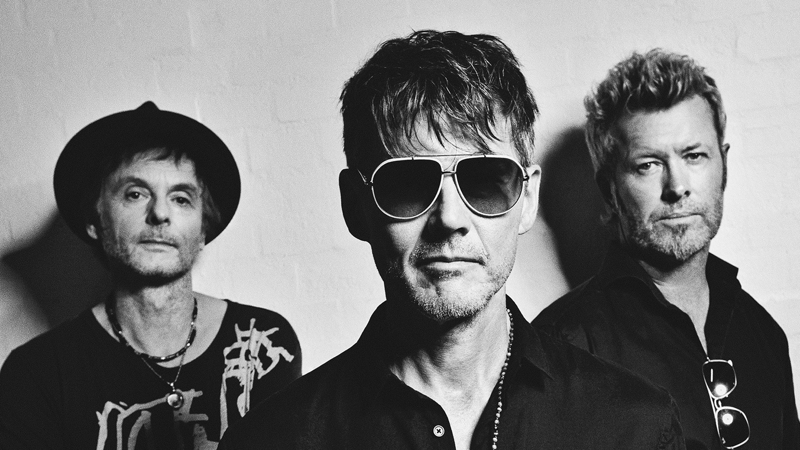

Acervo Bandas
a-ha

- a-ha é uma banda norueguesa de pop formada em 1982, que ganhou fama mundial com seu estilo inovador e uso marcante de sintetizadores.
- Suas músicas mais populares são: Take On Me, The Sun Always Shines on T.V. e Hunting High and Low.
- É uma das bandas europeias mais bem-sucedidas dos anos 80, conhecida também pelo icônico videoclipe animado de Take On Me.
EDUARDO ANTÔNIO DE CARVALHO LIMA - R.A 5159764